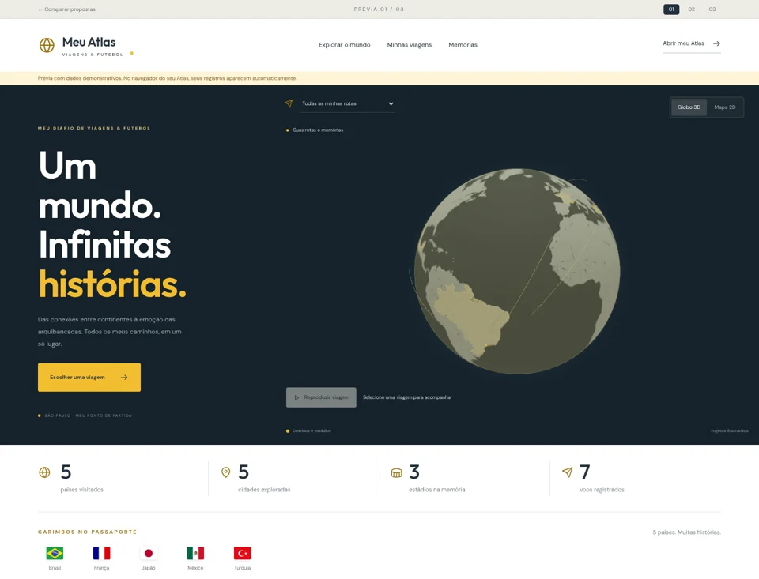
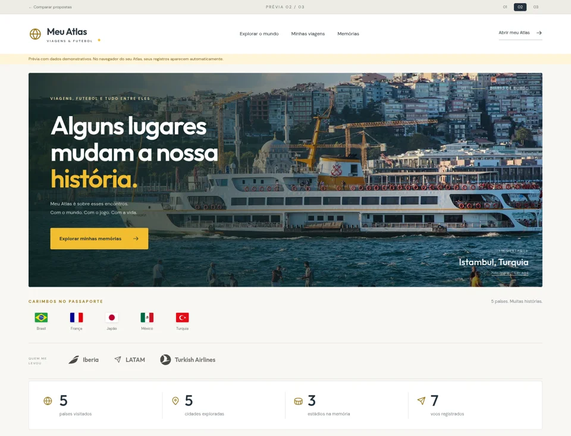
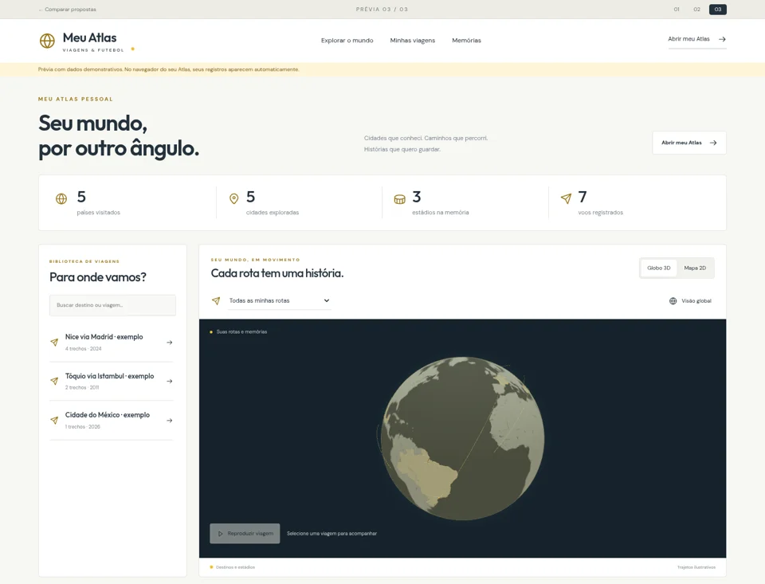

01 / IMERSÃO
Atlas imersivo
O globo é o protagonista. Uma abertura de impacto, rotas em movimento e as suas memórias logo abaixo.
Experimentar proposta 01 →Três propostas com a paleta original do Atlas: branco, grafite e dourado. Abra cada uma, gire o globo, escolha uma viagem e experimente no celular. Seu Atlas atual continua como está.

O globo é o protagonista. Uma abertura de impacto, rotas em movimento e as suas memórias logo abaixo.
Experimentar proposta 01 →
Fotografias amplas, bandeiras e destinos com espaço para respirar. O mapa entra como parte da narrativa.
Experimentar proposta 02 →
Resumo compacto, biblioteca de viagens e mapa lado a lado. Mais direto para navegar pelo seu histórico.
Experimentar proposta 03 →Como escolher: diga no chat qual proposta mais combina com você — 01, 02 ou 03. Podemos combinar elementos entre elas antes de aplicar o layout ao Atlas principal. Estas prévias consultam seus dados locais e não alteram seus registros.
As miniaturas usam dados demonstrativos. Nas páginas interativas, abra no mesmo navegador do seu Atlas para ver seus próprios registros. Fotografias ilustrativas com licença Creative Commons; créditos disponíveis nas propostas.